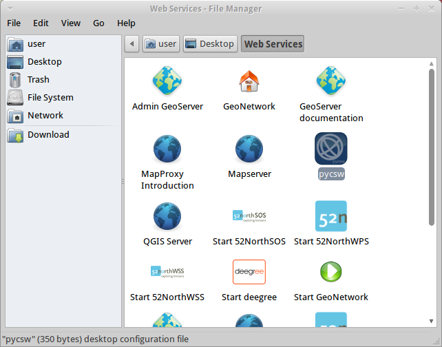
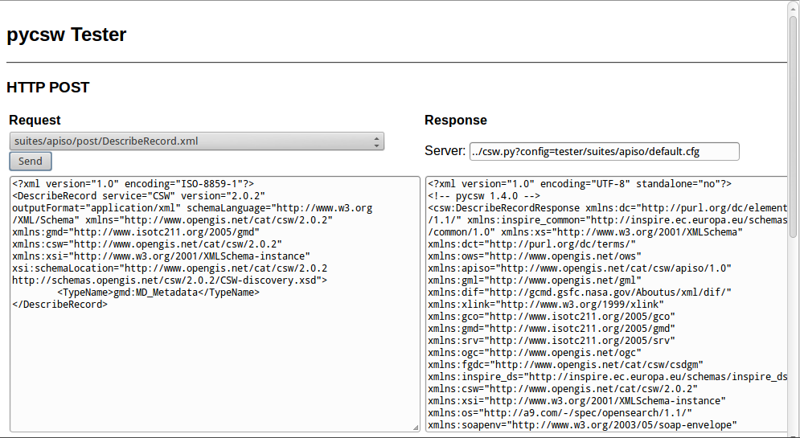
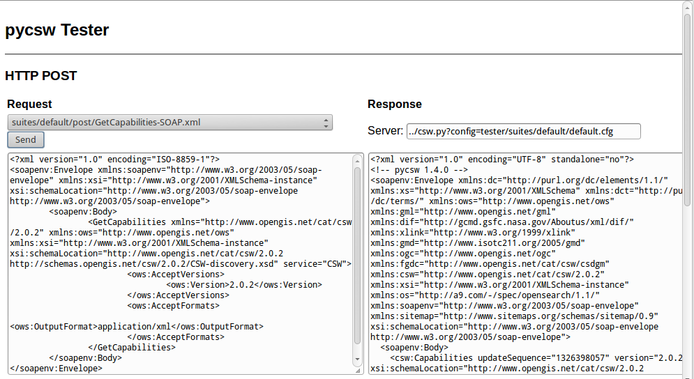
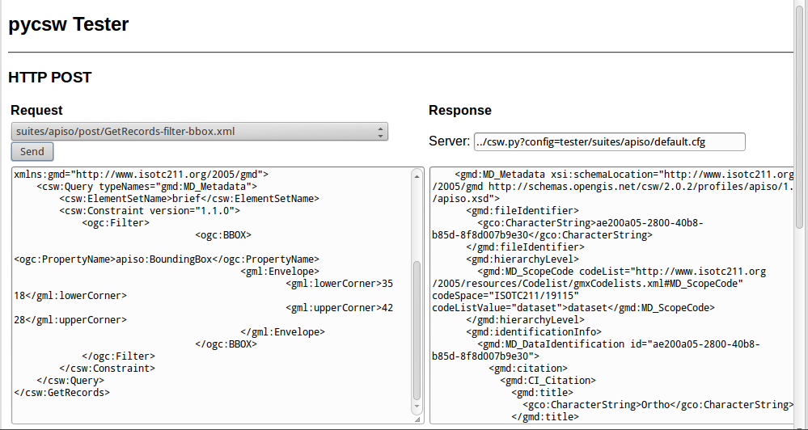
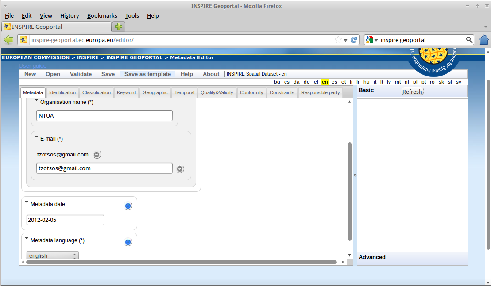
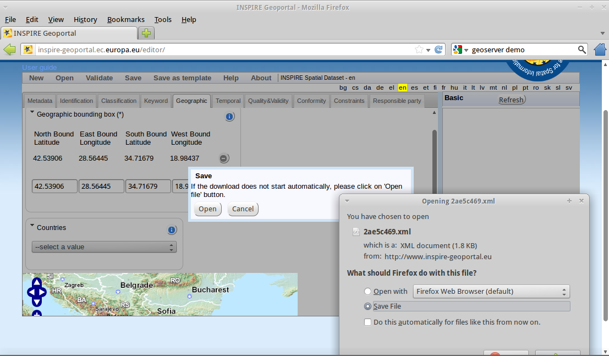

pycsw gyorstalpaló¶
A pycsw egy Pythonban írt OGC CSW szerver implementáció. A pycsw lehetővé teszi térbeli metaadatok publikálását és felfedezését. Létező térbeli metaadatok feltárhatók OGC:CSW 2.0.2 vagy OGC:CSW 3.0.0 keresztül.
Contents
Teszt alkalmazás futtatása¶
Az asztalon menjen a Web Services –> pycsw-re vagy nyissa meg a FireFox-ot és navigáljon a
http://localhost/pycsw/tests/index.htmloldalra:
{kind=link}
Baloldali legördülő listát kiválasztva a felhasználó a felhasználó különböző előre definiált XML-ként kódolt POST kéréseket láthat, melyek elküldhetők a pycsw-nek.
Válassza az „apiso/DescribeRecord”-ot és nyomja meg a Send” gombot. Az ISO Application Profile rekord leírása jelenik meg a jobb oldali panelben.
A „GetCapabilities-SOAP” kiválasztása után nyomj meg a „Send” gombot. Egy SOAP kérést küldünk a szerverhez a web szolgáltatási képességek közzétételéhez.
Adat rekordokat kereshet egy befoglaló téglalap térbeli lekérdezés végrehajtásával, válassza ki a „GetRecords-filter-bbox”-ot és módosítsa a koordinátákat az XML lekérdezésben.

{kind=link}
{kind=link}
{kind=link}
Végigmehet az összes elérhető lekérdezésen és a tesztelő alkalmazásból végrehajthat különböző lekérdezéseket.
A képességek és a konfiguráció megértése¶
A pycsw telepítés képességei a http://localhost/pycsw?service=CSW&version=2.0.2&request=GetCapabilities oldalon találhatók. Ha csak a http://localhost/pycsw linket használja, akkor a CSW 3.0.0, képességek dokumentumát kapja meg, mivel az a legújabb támogatott változat.
A képességek dokumentumban található web szolgáltatás metaadatok szerkesztéséhez módisíthatja az /etc/pycsw/default.cfg` fájlt a [metadata:main] címke alatt.
Ha engedélyezni akarja az INSPIRE Discovery Service támogatást, töltse ki a metaadatokat a [metadata:inspire] címke alatt és állítsa az enabled tulajdonságot true-ra.
Kérjük nézze meg a pycsw honlapon a dokumentációt a teljes funkcionalitás és konfiguráció beállításokhoz.
Metaadatok létrehozása¶
A térbeli adatokhoz vagy térbeli webszolgáltatáshoz készült metaadatfájlok a metaadatokra vonatkozó inspire irányelv nyílt forráskódú megvalósításával, az European Open Source Metadata Editor (EUOSME) segítségével hozhatók létre. Ez az alkalmazás megtalálható a http://inspire-geoportal.ec.europa.eu/editor/ oldalon. A forráskód a https://joinup.ec.europa.eu/svn/euosme/trunk oldalon.
Kitöltheti a kötelező metaadat mezőket az alkalmazás fülein végighaladva, mint a név, az adat tulajdonos, kulcsszavak, az adatforrás a weben, földrajzi elhelyezkedés (befoglaló téglalap vagy egy ország neve), stb.
{kind=link}
Miután minden elérhető információt megadott nyomja meg a validation gombot az oldal tetején, hogy ellenőrizze a konzisztenciát az INSPIRE direktívával.
{kind=link}
A sikeres ellenőrzés után az XML fájlt elmentheti a helyi lemezre és megnézheti egy szövegszerkesztőben vagy böngészőben.
Metaadatok betöltése¶
pycsw a következő adatbázisokat támogatja:
- SQLite3
- PostgreSQL (PostGIS opcionális)
- MySQL
Az OSGeoLive-ban egy egyszerű SQLite beállítást implementáltunk. Az adatbázis itt található /usr/share/pycsw/tests/suites/cite/data/records.db
Új adatbázis létrehozása¶
Egy új SQLite adatbázis létrehozásához ezeket kell tennünk:
Szerkessze a
/etc/pycsw/default.cfg:[repository]
- database*: teljes elérési új a metaadat adatbázishoz, adatbázis URL formátumban (lásd https://docs.sqlalchemy.org/en/latest/core/engines.html#database-urls)
- table: a táblázat név a metaadat rekordokhoz (az alapértelmezett
records)
Az adatbázis beállítása
$ sudo pycsw-admin -c setup_db -f /etc/pycsw/default.cfg
Ez létrehozza a szükséges táblákat és értékeket a tárházhoz.
A létrehozott adatbázis Simple Feature Access (SFS) megfelelőségű adatbázis és használható bármelyik implementációs szoftverben. Például használja az OGR-el:
$ ogrinfo /path/to/records.db
INFO: Open of 'records.db'
using driver 'SQLite' successful.
1: records (Polygon)
$ ogrinfo -al /path/to/records.db
# lots of output
Metaadatok importálása¶
$ sudo pycsw-admin -c load_records -f /etc/pycsw/default.cfg -p /path/to/records -r
Ez importálja az összes *.xml` rekordot a /path/to/records-ból az új adatbázisba és a tárolót az OGC:CSW 53. táblának megfelelően konfigurálja a lekérdezhető szolgáltatások hirdetéséhez.
Adatok felfedezése a QGIS MetaSearch modullal¶
- Az asztalon válassza a Desktop GIS –> QGIS-t a QGIS indításához majd kattintson a MetaSearch gombra (CSW ikon)
{kind=link}
- Adja hozzá a pycsw szervert a New gomb megnyomásával és írja be
http://localhost/pycsw/
{kind=link}
- Adjon hozzá néhány alapértelmezett szervert a Add default servers gombbal és szerezze be a szerver képességeit is a Server info gomb segítségével.
{kind=link}
- A katalógus használatával hajtson végre egy keresést egy szöveg vagy egy befoglaló téglalap megadásával
{kind=link}
Kipróbálandó dolgok¶
- Próbálja meg a tesztelő alkalmazáson keresztül felfedezni az adatokat, egy megfelelő kérés beállításával pl. tetszőleges szöveges keresés az „imagery” szöveggel az EUOSME által létrehozott xml adatok felfedezéséhez
{kind=link}
- Próbálja meg felfedezni a az adatokat a Python OWSLib CSW interfészen keresztül.
- Próbálja meg felfedezni az adatokat a GeoNode-ból, melyeket szintén tartalmaz az OSGeoLiveés a pycsw-t használja mint az alapértelmezett CSW motor,
Mi a következő?¶
Forduljon a pywcs honlapon található dokumentációhoz további információkért a pycsw-ről.